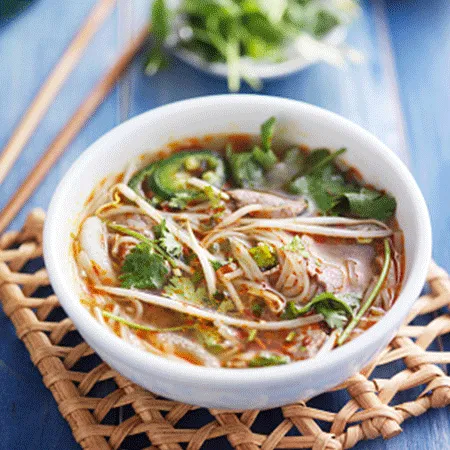

Vietnamese Pho Recipe

Pho is a popular Vietnamese noodle soup that commonly consists of rice noodles, beef or chicken, herbs, and various vegetables.
There are few things more delicious than a mess of rice noodles in a rich, umami-dominant,
intensely beefy broth. Vietnamese pho is a classic dish served all over the world, from fancy restraunts to home kitchens.
Part of what makes this meal so popular is that you can serve the same pot for several days and it gets better w/ every serving!
Despite popular belief, pho is relatively easy to make and allows for a lot of possibilities and fresh takes. So, whether you
want something hardy to get you over that hang over, or a friend/family member is sick and could use some soul-warming food,
Pho has got your back!
Ingredients:
- 2 large onions
- 1 large ginger root (about 6 inches long)
- 3 pounds beef shin w/ meat attached
- 2 pounds oxtail, cut into 1 inch slices
- 1 pound boneless beef chuck
- 1 pound beef brisket
- 3 whole star anise pods
- 1 cinammon stick
- 1 teaspoon fennel seeds
- 4 cloves
- 1 teaspoon coriander seeds
- 1/4 cup fish sauce
- 2 tablespoons sugar
- Kosher salt
To serve:
- 6 to 8 servings pho noodles
- 1 pound beef flank steak, sliced thinly and against the grain
- 2 to 3 cups mixed herbs (cilantro, basil, and mint)
- 2 to 3 cups trimmed bean sprouts
- Thinly sliced thai chiles
- 2 limes, cut into wedges
- Hoisin sauce
- Sriracha
Directions:
- Place onions and ginger in pot on stove. Set temperature to high and allow onions/ginger to partially char/crisp
on the outside. Set aside.
- Combine beef shins, oxtail, chuck, and brisket in a large pot. Cover over w/ cool wqter. Bring to boil and let boil for 15 minutes,
then drain meat in collander. When cool enough to handle, rinse under cool running water. Return meat to the pot and cover again w/
cool water.
- Add charred onions, ginger, star anise, cinnamon, fennel, cloves, coriander, fish sauce, sugar and 1 tbsp of salt. Bring to boil
then reduce heat and let simmer. Skim broth occasionally to remove congealed fat. Let simmer for about 1.5 - 2 hours.
- After 1.5 - 2 hours, transfer brisket and chuck to small bowl and cover over w/ cool water. Place in refrigerator.
- Continue simmering remaining broth for another 4 hours. Top off w/ water as necessary and check tast consistently. Add fish
sauce/salt/sugar if flavor is too mild. Continue to skim broth of excess fat on surface and discard. Try to keep broth at
around 4 quarts.
- As the broth approaches serving time, remove beef from fridge and slice into thin slices or chunks. Remove aromatics including star
anise, and cinammon from broth.
- Prepare pho noodles according to package. To serve, place noodles into serving bowls and poor hot broth over them.
- Serve immediately with sides for guests to add as they wish. You can also serve w/ thinly sliced raw flank steak; just place the steak
atop the noodles and pour the hot broth over it to cook.